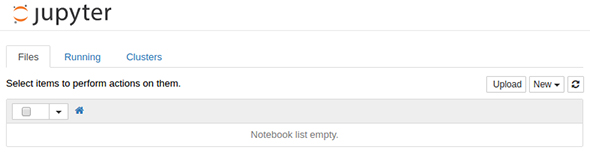
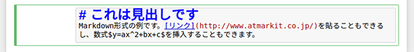

Jupyter Notebook¶
这里介绍「Jupyter Notebook」的各种基本操作。
安装Jupyter Notebook¶
Jupyter的安装，因具体环境而异，有pip安装，Anaconda安装等等方法，不作详细说明。
比如在Anaconda中，顺便把sphinx及nbsphinx一起安装了。使用ipynb文件制作文档时，非常方便。 大致安装以下工具。
$ conda install -c conda-forge sphinx
$ conda install -c conda-forge pandoc
$ conda install -c conda-forge nbsphinx
$ conda install -c conda-forge jupyter
$ conda install -c conda-forge ipython
$ conda install -c conda-forge ipykernel
云环境上还有一些可以免费使用的，如：
Jupyter Notebook基本使用¶
启动¶
这是我本人环境下的运行jupyter的情形，比较麻烦，涉及docker中volume挂接等等。
#启动container
$ docker run -it -p 8888:8888 -v /opt/notebooks:/opt/notebooks ml-env /bin/bash
#启动jupyter
# jupyter notebook --notebook-dir=/opt/notebooks --ip='0.0.0.0' --no-browser --allow-root
通常，如下启动:
$ jupyter notebook
指定端口启动:
$ jupyter notebook --port 9000
正常启动后，就可以通过浏览器访问使用了。

输入并运行代码¶
输入代码。并按Shift + Enter键，执行代码
[1]:
a = 3
b = 4
a + b
[1]:
7
显示单元格中最后一行的结果。
执行后，将创建一个新的单元格。在其中输入新代码，按Shift + Enter来连续执行。 可以单击已执行的单元格来编辑内容，重新执行。
此外，使用Ctrl + Enter 键也可以执行单元格，但不会创建新的单元格。
[2]:
import numpy as np
a = np.arange(9).reshape(3,3)
a
[2]:
array([[0, 1, 2],
[3, 4, 5],
[6, 7, 8]])
[3]:
b = np.arange(10,19).reshape(3,3)
b
[3]:
array([[10, 11, 12],
[13, 14, 15],
[16, 17, 18]])
[4]:
np.dot(a,b)
[4]:
array([[ 45, 48, 51],
[162, 174, 186],
[279, 300, 321]])
在一个notebook中，遵照解释型语言的原则，读入的数据和变量一直有效。
终止Jupyter Notebook¶
在console上按 Ctrl + C 键，显示信息后。按y键。
he Jupyter Notebook is running at: http://localhost:8888/
Shutdown this notebook server (y/[n])?

编辑单元格¶
使用Edit菜单编辑单元格。特别是「Delete Cells」、「Split Cell」、「Merge Cell Above」（上）、「Merge Cell Below」（下）使用起来很方便。

Pandas的DataFrame¶
通常变量的评估值以文本格式显示，但Pandas的DataFrame以表格格式显示。
[5]:
import pandas as pd
df = pd.DataFrame(np.arange(20).reshape(5,4), columns=list("abcd"))
df
[5]:
| a | b | c | d | |
|---|---|---|---|---|
| 0 | 0 | 1 | 2 | 3 |
| 1 | 4 | 5 | 6 | 7 |
| 2 | 8 | 9 | 10 | 11 |
| 3 | 12 | 13 | 14 | 15 |
| 4 | 16 | 17 | 18 | 19 |
matplotlib绘图¶
在Notebook中绘制Matplotlib图形，需指定「%matplotlib inline」。
[6]:
%matplotlib inline
import matplotlib.pyplot as plt
x = np.linspace(-5,5,300)
y = np.sin(x)
plt.plot(x,y)
[6]:
[<matplotlib.lines.Line2D at 0x7ff842fd5f60>]
其他魔术命令¶
以“％”开头的命令称为魔术命令。如％timeit。测代码的执行时间。
[7]:
%timeit np.arange(10000000).sum()
38.9 ms ± 1.11 ms per loop (mean ± std. dev. of 7 runs, 10 loops each)
还有其他魔术命令，有关信息，在单元格中键入「%magic」，然后按Shift + Enter，获取详细的文档。
[8]:
%magic
函数，方法，类等的帮助信息¶
获得有关函数，方法，类等的帮助信息，在函数名称，方法名和类名之后添加？，然后按 Shift + Enter键。
使用??，则显示相应的源代码。
[9]:
np.linspace?

[10]:
np.linspace??

Markdown格式或其它格式输入文本¶
除了代码，还可以使用多种格式的文本。在文稿和执行代码混在的文档中使用，非常方便。从右上方的下拉菜单中选择Markdown菜单，写Markdown文本。

创建Markdown文档
，以Markdown格式输入文本，然后按 Shift + Enter键设置文本格式。
Markdown文本示例（格式化之前）

Markdown文本示例（格式化后）
可以将以这种方式创建的页面导出为HTML形式。使用起来很方便。
另外，选择Raw NBConvert Format后，还可以指定rest，html等格式。这是一个非常方便的功能。
[ ]: